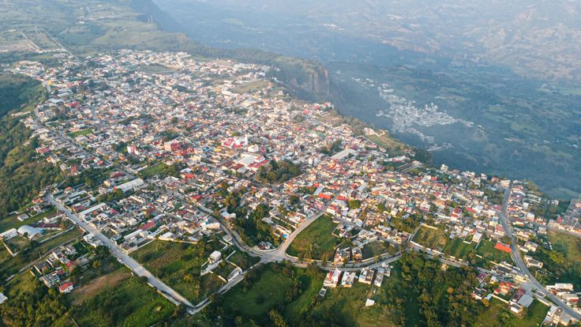

¡Bienvenide a mi Blog de Proyecto Web!
Este blog es parte de mi aprendizaje en la materia de Proyecto Web, de la Licenciatura de Administración Negocios Internacionales. Aquí documentaré y compartiré el desarrollo de mis actividades, enfocadas en la creación y personalización de páginas web utilizando herramientas como Visual Studio Pro y GitHub para su publicación en la red. A lo largo de este proyecto, exploraré diferentes técnicas de diseño web, desde la estructura en HTML y CSS, hasta la implementación de funciones prácticas que hacen que una página sea dinámica y atractiva. Cada actividad busca integrar creatividad, funcionalidad y los principios básicos del diseño web, mostrando cómo estas habilidades son esenciales en el mundo digital y empresarial de hoy. ¡Espero que disfrutes este recorrido y que encuentres inspiración en cada actividad que comparto!
Alto Lucero de Gutiérrez Barrios
Alto Lucero es un hermoso pueblo ubicado en la región montañosa de Veracruz, a unos 40 kilómetros de Xalapa. Con una altitud de más de 1,000 metros sobre el nivel del mar, este lugar se caracteriza por su clima fresco, paisajes verdes y una tranquilidad única que enamora a quienes lo visitan. El pueblo es conocido por su rica historia, que se remonta a finales del siglo XVIII, y por sus tradiciones culinarias, siendo las enchiladas alteñas uno de los platillos más representativos. Además, cuenta con manantiales y recursos naturales que han sido vitales para su desarrollo y que siguen siendo motivo de orgullo local. Para mí, Alto Lucero es más que mi hogar; es el lugar que me vio crecer y que guarda los recuerdos más valiosos de mi vida. Cada calle, cada celebración y cada encuentro me recuerdan la importancia de nuestras raíces y el amor por nuestra tierra.
